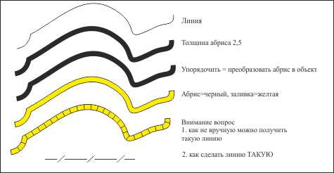
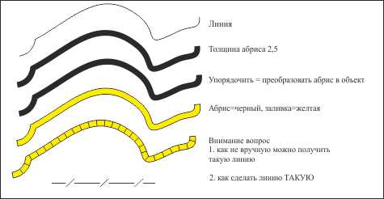
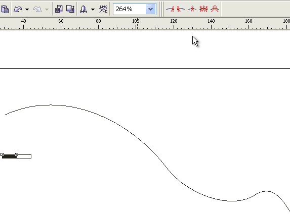
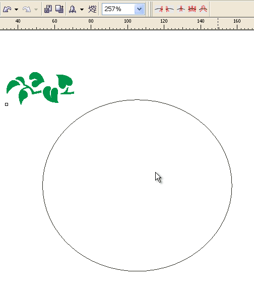
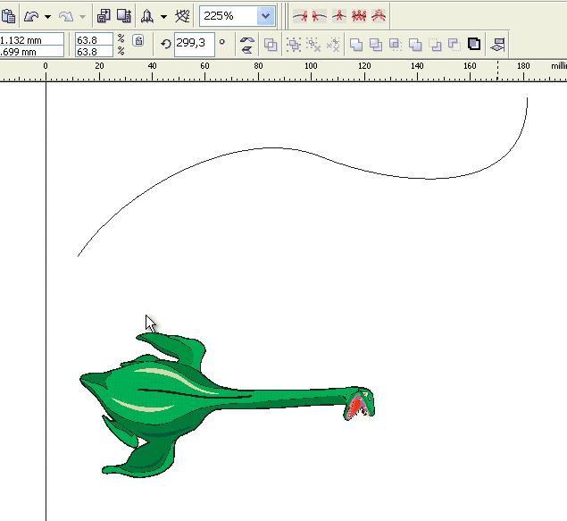

как создать хитрую линию
adda84 / 14.12.2012, 12:10
Форум:
Версия программы:
15.2.0.661 (sp2)
как получить результаты на картинке (интересует полуавтоматический режим, а не ручками полоски в разных слоях)

как получить результаты на картинке (интересует полуавтоматический режим, а не ручками полоски в разных слоях)

А если опорная линия - сплайн, то почему ничего не выходит?
Что есть сплайн и что не выходит?
MBK,
я черчу линию, потом применяю к ней мазок аэрозольной кисти, настроенный на нужный лад, и получаются эти самые штришки заданные по направлению изначальной линии. Но если эта линия начерчена инструментом сплайн, то свойства применить не удаётся.
Почему?
Что такое "инструмент сплайн" в нормальной нелокализованной версии?
В кривые такую линию преобразовать можно, а потом применить кисть?
MBK, Спасибо огромное! Всё получилось, я сам не догадался. Инструмент был В-сплайн, я пригледялся :)
А вот и макрос. Можно сделать так:

или так:

или даже так:

А вот и описание:
Внешняя ссылка
Страницы